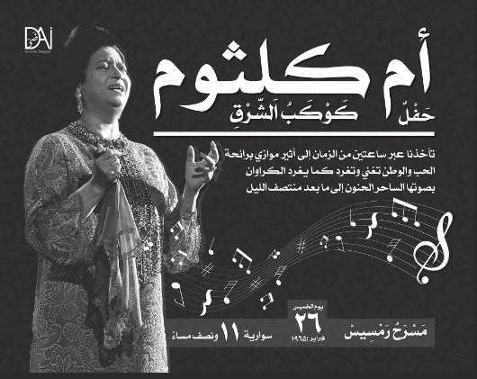

Egypt has a rich and diverse musical heritage that spans thousands of years. Here’s a brief overview of Egyptian music and some of its most famous musicians: Historical Background Egyptian music has been integral to its culture since ancient times. The ancient Egyptians credited the goddess Bat and the god Ihy with the invention of music. Over the centuries, music played a significant role in religious ceremonies, celebrations, and daily life1. Traditional and Modern Music Traditional Music: Egyptian traditional music is characterized by the use of instruments like the oud, qanun, ney, and various types of percussion. The tonal structure is defined by the maqamat, similar to Western modes, while the rhythm is governed by iqa’at1. Modern Music: Modern Egyptian music has been influenced by Western styles while retaining its unique Middle Eastern flavor. Cairo has been a central hub for the development of contemporary Egyptian music since the early 20th century1. Notable Musicians
Umm Kulthum Umm Kulthum Umm Kulthum: Often referred to as the “Star of the East,” Umm Kulthum is one of the most iconic singers in the Arab world. Her powerful voice and emotive performances have left a lasting legacy1. Mohammed Abdel Wahab Mohammed Abdel Wahab Mohammed Abdel Wahab: A prominent composer and singer, Abdel Wahab was known for blending traditional Arabic music with Western elements. He composed many songs for Umm Kulthum1. Amr Diab Amr Diab: Known for his “Mediterranean music” style, which combines Western and Egyptian rhythms, Amr Diab is one of the most successful contemporary Egyptian singers. He has won numerous awards, including the World Music Awards2.
Sayed Darwish Sayed Darwish Sayed Darwish: Often called the father of modern Egyptian music, Darwish’s compositions played a significant role in the Egyptian nationalist movement1. Fathy Salama: An award-winning composer and pianist, Salama is known for his experimental music that combines modern and traditional sounds2. Influence and Legacy Egyptian music has had a profound influence on the music of the Middle East and beyond. The country’s musicians have pushed the boundaries of traditional sounds, creating new genres and styles that continue to inspire artists worldwide12. If you’re interested in exploring more about Egyptian music, I can provide specific recommendations or delve deeper into any particular artist or genre. Let me know!
